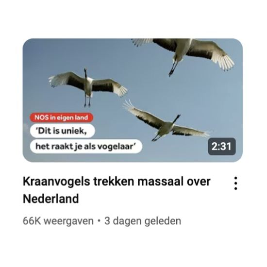

Chinese kraanvogel, geen kraanvogel
23 februari 2025 · NOS
- Op de foto
- Chinese kraanvogel
- Het ging over
- Kraanvogel

Leuk dat de @nos een Youtube-video heeft gemaakt over de Kraanvogeltrek in Nederland! Jammer dat ze dan in de thumbnail een foto gebruiken van Red-crowned Crane / Chinese Kraanvogel.